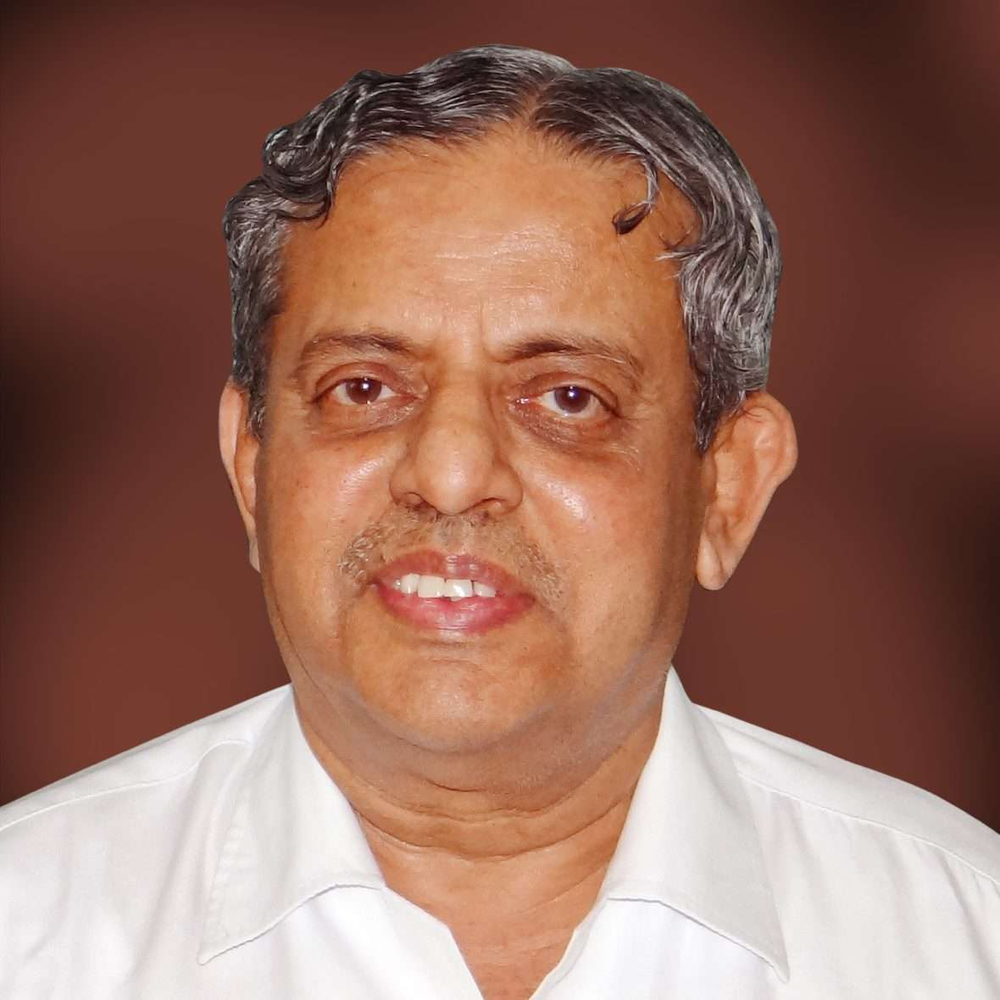
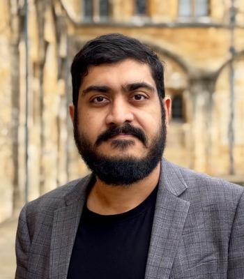
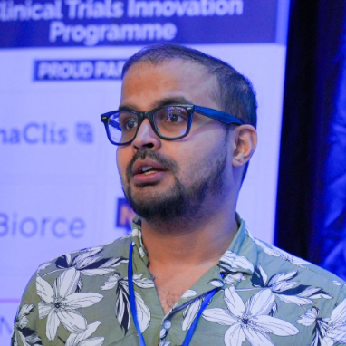

Invited Speakers & Panelists
Distinguished researchers and thought leaders exploring the intersections of Web Science, artificial intelligence, networks and society
Our Distinguished Speakers
WebSciX 2026 brings together distinguished academicians, researchers and practitioners from diverse disciplines to discuss emerging developments in Web Science, artificial intelligence, digital infrastructures and their societal implications.
The two-day conference features keynote addresses by internationally recognised scholars, alongside an interdisciplinary panel discussion on Responsible AI, metrology and assurance, with a focus on the Global South.
Keynote Speakers — Day 1
Opening day keynote addresses

Padma Shri Dr. H. R. Nagendra
Vivekananda Yoga Anusandhana Samsthana
Dr. H. R. Nagendra is a distinguished academician and researcher whose work has contributed significantly to the development of Yoga research and education.
He is the President of S-VYASA Society and has played an important role in establishing Yoga as an area of scientific research and interdisciplinary academic inquiry.

Dr. N. K. Manjunath Sharma
Vivekananda Yoga Anusandhana Samsthana
Dr. N. K. Manjunath Sharma is an academician and researcher associated with S-VYASA, with contributions to Yoga research, education and academic administration.
His work encompasses the scientific study of Yoga and its applications, bringing together perspectives from traditional knowledge systems and contemporary research.
Keynote Speakers — Day 2
International perspectives on Web Science, networks and the digital society

Dame Wendy Hall, DBE, FRS, FREng
University of Southampton, United Kingdom
Dame Wendy Hall is a leading computer scientist and internationally recognised pioneer in Web Science. She is Regius Professor of Computer Science at the University of Southampton and Director of the Web Science Institute.
Her research has contributed to the development of multimedia and hypermedia systems, digital libraries and the interdisciplinary study of the World Wide Web.
She has played a significant role in shaping international research and technology policy, particularly in the areas of Web Science and artificial intelligence.

Prof. Noshir Contractor
Northwestern University, USA
Professor Noshir Contractor is an internationally recognised scholar in network science, computational social science and Web Science. He is the Jane S. & William J. White Professor of Behavioral Sciences at Northwestern University.
His research examines how social and knowledge networks form, evolve and influence collaboration across organisations, scientific communities and digital environments.
His work brings together communication, organisational science, computational methods and network theory to understand the dynamics of interconnected societies.
Panel Discussion
An interdisciplinary discussion on responsible artificial intelligence and its implications for the Global South
Responsible AI: Metrology and Assurance (with a Focus on the Global South)
As artificial intelligence (AI) starts to take an ubiquitous role in our lives, its responsible development and use has become a key topic of deliberation and debate. While most appreciate its central importance moving forwards and relevant legislations start to emerge, there is still a critical gap in benchmarking and standardization of AI.
This panel delves into the notion that we need a more rigorous approach in AI evaluation and validation taking inspiration from measurement science (metrology) and performance guarantees (statistical assurance).
Additionally, as AI enters into its multimodal era, in the long road towards general purpose AI, the panel will discuss particular challenges that may come up in the Global South, how it relates to AI fairness and equity, and how one might ensure the same despite the AI arms race.
Panel Participants
Invited experts bringing perspectives from academia, industry and responsible AI research
Prof. Dame Wendy Hall, DBE, FRS, FREng
University of Southampton
Director, Web Science Institute
Dame Wendy Hall is an internationally recognised computer scientist and a leading voice in Web Science, digital technologies and artificial intelligence.

Dr. Tapabrata Rohan Chakraborty
University College London
Lead, Transparent and Reliable AI Lab (TRAIL)
Dr. Tapabrata Rohan Chakraborty is a researcher at University College London and leads the Transparent and Reliable AI Lab (TRAIL), shared with the Alan Turing Institute.

Dr. Arijit Patra
UCB UK
Honorary Senior Lecturer, University of Glasgow
Dr. Arijit Patra is a Senior Principal Scientist at UCB UK and an Honorary Senior Lecturer at the University of Glasgow.
Dr. Kiranmayee Janardan
Infosys
Dr. Kiranmayee Janardan is the Lead Consultant in Responsible AI at Infosys. Her participation brings an industry perspective to discussions on responsible AI and its implementation.
Moderator

Dr. Jayati Deshmukh
Dr. Jayati Deshmukh will moderate the panel discussion on Responsible AI: Metrology and Assurance, bringing together perspectives from academia and industry.
Join Us at WebSciX 2026
Join researchers, academicians, practitioners and technology leaders for two days of interdisciplinary exchange, keynote addresses, workshops, research presentations and discussions on the future of Web Science.